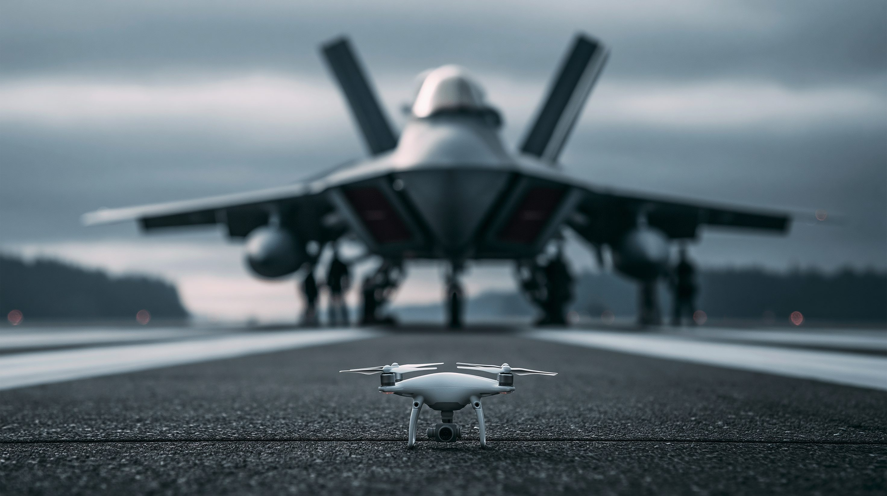
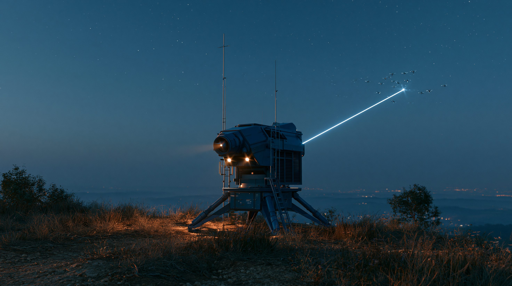

01核心と問い — 500ドルが覆した戦争
ドローンは、もはや偵察用の「空飛ぶカメラ」ではない。ウクライナとロシアの戦場では、数百ドルの小型機が前線の戦車を破壊し、数百キロ先の製油所を炎上させる主力兵器になった。重要なのは、これが一握りの先端企業ではなく、地下室や町工場で量産される「消耗品」だという点だ。安価で、大量で、しかも年々賢くなる——この組み合わせが、高価な兵器を中心に組み立てられてきた戦争の常識を内側から崩している。その変質を生んだのは、光ファイバー制御・AI標的識別・大量生産という、3つの技術革新だ。
FPV（First Person View＝一人称視点）ドローンは、機体のカメラ映像をゴーグルで見ながら操縦者がまるで搭乗しているかのように飛ばす小型機で、爆薬を積んで標的に体当たりする「カミカゼ」型が前線の主力になっている。徘徊型兵器（loitering munition）は、標的の上空をしばらく旋回（徘徊）して機会を待ち、見つけ次第突入する自爆型ドローンを指す。ロシアのGeran（Shahed系）が代表例で、数百〜千キロを飛んで都市やインフラを攻撃する。
02タイムライン — ドローン戦争の進化
市販ドローンの軍事転用
侵攻初期、両軍は中国製の市販ドローン（DJI製など）を偵察や手製爆弾の投下に転用した。年間生産はまだ数千機規模で、ドローンは「補助的な道具」にすぎなかった。
FPVカミカゼドローンの本格化
爆薬を積んで体当たりするFPVドローンが前線の主力に躍り出た。戦車や装甲車を1機数百ドルの機体が破壊する光景が常態化し、両軍は量産競争へ突入した。
電子戦の激化と光ファイバードローン
無線を妨害するジャミングが戦場を覆い、ドローンが次々に墜とされるようになった。これに対抗してロシアが、ケーブルで操縦する光ファイバードローンを投入。妨害の効かない攻撃手段が生まれ、攻防は新たな段階に入った。
AI終末誘導と長距離攻撃ドローン
AIによる終末誘導が普及し、妨害下でも命中する自律性が現実になった。同時に、数百〜千キロを飛ぶ長距離攻撃ドローンがロシア国内の製油所を狙い始める。ウクライナの年間生産は450万機に達した。
物量競争と「脱中国」の達成
ロシアは年産700万機を計画し、物量で前線と後方を圧迫する構えを見せた。一方ウクライナは3月、部品を中国に頼らない「中国製ゼロ」のドローンを実現。迎撃専用ドローンも10万機規模で生産され、攻防双方が加速した。
モスクワへ約200機の記録的攻撃
ウクライナが約200機のドローンで首都モスクワを攻撃し、侵攻以来数年ぶりの規模となった。モスクワ製油所が週内2度目の被弾で炎上、空港4か所が一時閉鎖。迎撃された1機はショッピングモールに墜落して火災を起こし、別の1機は高層住宅に命中した。
036つの視点
| 立場 | 基本スタンス | 最大の主張 | 課題・懸念 |
|---|---|---|---|
| ウクライナ | 開発・運用の最前線 | 500ドルが巨人への対等装置 | 部品の脱中国は数年先 |
| ロシア | 標的かつ先駆者 | 光ファイバーと物量で圧迫 | 首都も後方も聖域でない |
| 中国 | 供給網の支配者 | 撃たずにテンポを左右 | 「中立」を装う事実上の関与 |
| 西側軍需・各国軍 | ドクトリン転換 | 安価な対ドローンで反撃 | コスト非対称の解消は途上 |
| 倫理・国際法／専門家 | 自律化への警鐘 | 人間の関与が消える | 自律兵器規制が不在 |
| 民間・重要インフラ | 最大の被害者 | 後方の消滅を可視化 | 防御コストが見合わない |

04データ・統計
1回あたりのコスト非対称（対数軸）
攻撃用FPVドローンは1機500ドル前後。これを撃ち落とす地対空ミサイルや空対空ミサイルは1発100万ドル級に達する。縦軸は対数目盛。攻撃側の桁違いの安さが一目でわかる。出典：各種軍事分析、公開情報
ウクライナのドローン年間生産数
2022年の約5,000機から、2025年には450万機へ。わずか3年で約900倍という指数的な増加。ロシアも2026年に年産700万機を計画し、ドローンは「物量の量産競争」になった。出典：各種推計
ドローンの種類と特徴
| 種類 | 射程 | 特徴 |
|---|---|---|
| FPVカミカゼ | 〜20km | 一人称視点で操縦し体当たり自爆。1機300〜500ドルの前線の主力 |
| 光ファイバーFPV | 10〜20km | ケーブルで操縦し電子妨害が無効。電子戦に強い新世代 |
| 長距離攻撃型 | 1,000km超 | 徘徊型（Geran／Shahed系）。都市・インフラへの戦略打撃 |
| 迎撃ドローン | 数km | 飛来するドローンを空中で撃墜。1機3,000〜5,000ドル |
| 偵察ドローン | 可変 | 標的の捜索・観測を担う「攻撃の目」 |
無線から光ファイバーへ、手動からAI自律へ、近距離から長距離へ——あらゆる軸で進化が同時進行している。
注目の数字
05深掘り — これから2〜3年で何が起きるか
モスクワ攻撃は、ドローンが「補助兵器」から「戦略兵器」へ変わったことを首都の空で示した。自律化・対ドローン・供給網・後方の脆弱性という4つの軸で、今後2〜3年を見通す。
ドローンの革命は、単に新しい兵器が増えたという話ではない。光ファイバーが妨害を、AIが照準を、量産が価格を解決したことで、「安価な精密打撃を、誰もが、大量に」放てる時代が来た。兵器の民主化は、戦場の力学だけでなく、都市に暮らす人々の安全の前提そのものを書き換えつつある。500ドルの空軍が突きつけたのは、技術が安くなったとき、戦争はどこまで広がるのか、という問いだ。
